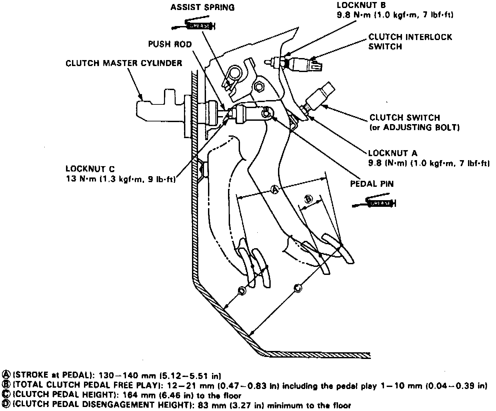

Clutch: Adjustments
Fig. 2 Clutch Pedal Adjustments:

1. Loosen locknut A, Fig. 2, and thread clutch switch or adjusting bolt out until it no longer contacts clutch pedal.
2. Loosen locknut C and rotate pushrod in or out until specified pedal stroke and height are obtained, then tighten locknut to specification.
3. Rotate clutch switch or adjusting bolt until it contacts clutch pedal, then an additional 3/4-1 turn.
4. Tighten locknut A, then loosen locknut B and clutch interlock switch.
5. With clutch pedal fully depressed, measure clearance between pedal and floor.
6. Release pedal 0.6-0.8 inch and hold in place, then rotate clutch interlock switch until engine can start with clutch in this position.
7. Rotate clutch interlock switch 3/4-1 additional turn, then tighten locknut B to specification.